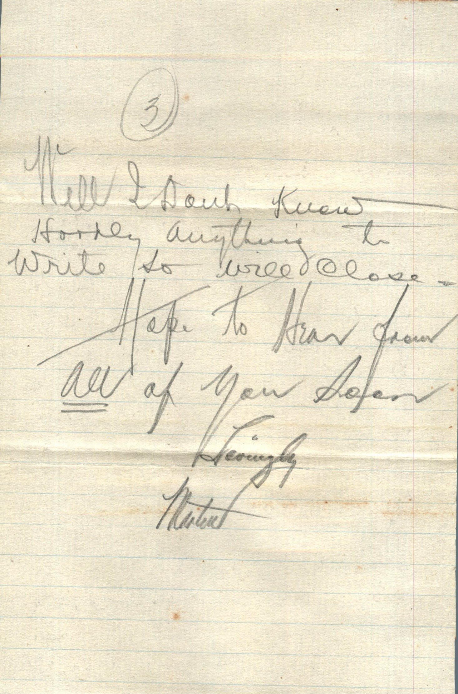
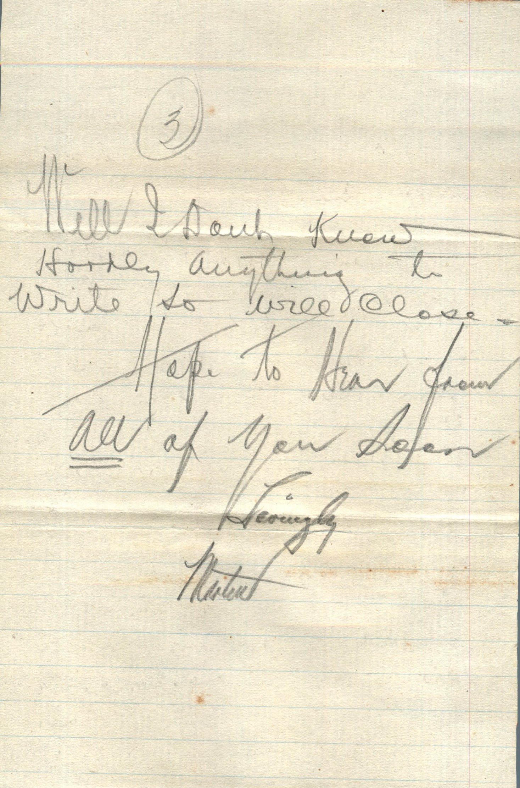

From: Martin Chandler, To: Elijah H. Chandler and Family
Mailed From: Hillsboro, Texas on January 14, 1916
Mr. E.H. Chandler
Pearl, Ill
Pike Co
Hillsboro, Tex Jan 14, 1916
Dearest Folks,
Thought I'd write few lines this am. I've been going on so much about how warm it was and night before last it dropped to 10 degrees about zero. I was in a box car all night and it was certainly cold. I didn't go to Greenville with Mr. Coster as expected. Stayed in San Antonio another day trying to get a job. I came to Hillsboro and have been treated fine. The above company have their bunk cars here and they have me my meals and the foreman gave me a splendid letter to W.L. Hilt to help me towards getting a job. Says it don't pay very much to start but good chance for promotion for right man. Sure have reacted me like a prince. I'll go from here to Dallas and then to Greenville to get my clothes and then to Ft. Worth to see this company. Ft. Worth is close to Dallas but will have to go to Greenville to get my clothes account can't have them forwarded. With the letter I have, I certainly ought to be able to get something. Will send you a copy of the letter. It is about 20 degrees above zero this am and am sure glad I've a good warm place to stay while I'm here.
This Mr. Allen who gave me the letter hadn't know me but about 5 hours when he gave it to me. Sure is a nice man.
Well I'll write you soon as get to Ft. Worth and see what I can get. Hope everything is well and OK.
Lovingly,
Mart
Included in the Envelope:
Hillboro, Texas Jan 14th, 1916
Mr. McDonnell
Fort Worth, Texas
Dear Sir,
The bearer of this note, R.B. Brady, is a telegrapher and general rail-road clerk. He writes a splendid hand, appears to be clever, ambitious, and willing. From lengthy conversation with him and general appearance I believe he would make a good clerk and I therefore respectfully suggest that you give him a chance if you have anything.
Yours,
John P. Allen

 
